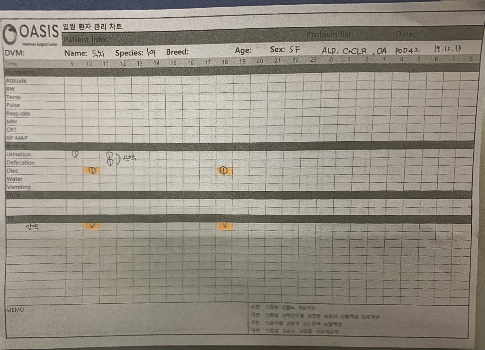

Skip to main content
- 원내의 입원견이 많거나 수술한 아이들일 경우 감염에 취약
(항시 입원장과 넥칼라 꺠끗하게 유지)
- 타액으로 전염되는질경이나 균 있을 가능성이 있기 때문에
맨손으로 경구 투약 X
- 7일에 1번 몸무게측정 사료량이 맞게 급여되고 있는지 확인
- 식욕없어 굶는아이 있는 경우 주치의 보고
- 수액처치가 들어가야하거나 내복약 추가 되는지 확인
- 환자처치후 입원장 앞뒤로 잘 소독하기(수시로 소독)
- 배변으로 더러워진 장을 1순위로 청소 진행
- 각한 감염원을 가진 환축은 제일 마지막에 처치 다른 환축과 접족 제한
- 정형외과 진료 입원견일 경우 BCS 파악하여 비만도 확인
- 비만일 경우 스테이션 컴퓨터에 있는 사료량 계산법으로 급여량 측정
- 급여시 입원장안에서 움직임이 제한되어있으니 사료를 뜨거운 물에 불려서 급여
- 입맛이 까다로울 경우 원내 사료를 먹지 않을 수 있으나 적정 시간이 지나면 위생적이지 못하므로 밥그릇 수거
(주치의에게 반드시 보고)
- 원내 급여시간은 AM10시 / PM 5시30분
- 보통 수술 4일차(POD4) 약 조제
- 신경외과수술의 경우 POD1 에도 약 조제 가능
- 분주(소분)시 약 량이 차이나지 않도록 주의
- 약 포장시 실링이 잘 되어있는지 확인 필수
- Sid (1일 1회)약물일 경우 AM 인지 PM 인지 확인 필수
- 계산식 : 용량 X 체중 X 일투수 X 일수 X 내복약mg = 총 알약 수
- 용어
- SID : 1일 1회
- BID : 1일 2회
- TID : 1일 3회
- QID : 1일 4회
- E.O.D : 2일 1회
- q~(quaque) : ~마다
- q2h : 2시간마다
- 투약하려는 약과 내복약 봉투에 기제되어있는 환축이 동일한지 확인
- 먹는약이 오전/오후 약이 구분되어있는지 확인
- 가루약 : 실린더 사용 물과 잘 섞어 입안으로 투약
(심장병이나 호흡기 질환이 있는 아이일 경우 주사기 투약법은 제한)
- 알약/캡슐 : 환축의 목구멍까지 알약/캡슐을 넣은 후 손으로 입을 닫고 뱉지 않고 삼킬 수 있도록 도와줌
(알약 투약기 사용)
- 식전약이 아닌 경우 급여가 끝난 후 투약
식중약일 경우 급여가 어느정도 들어갔을 떄 투약
- 고양이는 가루약은 거품을 물 수 있으니 캡슐로 투약
- 여러 종류의 내복약을 먹는 아이일 경우 투약시간이 겹쳐도 되는 약인지 확인후 투약
- 내복약의 투약 획수 확인

- Species 종
- Breed 품종
- Attitude 상태
- BW ( Body Weight ) 몸무게
- Temperature 체온 38.5~ 39.5
- Pulse 심박
- respiration rate 호흡수
- Mucous membrane color 잇몸 color
- CRT (capillary Refill Time) 모세혈관 재충만 시간
- BP (Blood PRessure) 혈압
- Activity 활동
- Monitoring 모니터링(상태체크)
- Urination 배뇨
- Defecation 배변
- Diet 급여
- Water 급수
- Vomiting 구토
- Fluid 수액
- Tx (Treatment) 처치
T- Temperature(체온)
p- Pulse(심박수)
R- Respiration Rate(호흡수)
MMCRT- Mucous Mambrane(모세혈관재충만시간)
Skin Turgur- 피부 탄력검사
PLR- 동공 및 반사 검사